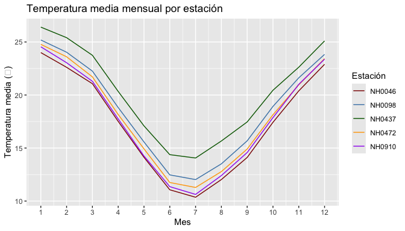

MeteorologicoR reúne las funciones que desarrollamos durante los trabajos transversales de Programación II para trabajar con datos de estaciones meteorológicas del INTA. Sirve para descargar los datos de una estación, resumir sus temperaturas y graficar el ciclo anual sin tener que reescribir el mismo código cada vez.
Está pensado para estudiantes y docentes que trabajen con los datos del Sistema de Información y Gestión Agropecuaria (SIGA).
Instalación
Podés instalar la versión en desarrollo desde GitHub con:
# install.packages("pak")
pak::pak("boglicdelfina/MeteorologicoR")Cómo empezar
El paquete incluye estaciones, con las mediciones diarias de cinco estaciones de Santa Fe:
library(MeteorologicoR)
head(estaciones)
#> id fecha temperatura_abrigo_150cm temperatura_abrigo_150cm_minima
#> 1 NH0472 1961-07-01 11.1 8.8
#> 2 NH0472 1961-07-02 5.5 0.5
#> 3 NH0472 1961-07-03 6.0 1.2
#> 4 NH0472 1961-07-04 NA 7.0
#> 5 NH0472 1961-07-05 12.4 10.0
#> 6 NH0472 1961-07-06 11.0 5.5
#> temperatura_abrigo_150cm_maxima precipitacion_pluviometrica
#> 1 13.4 0
#> 2 10.5 0
#> 3 10.8 0
#> 4 NA 0
#> 5 14.8 0
#> 6 16.5 0
#> humedad_media_8_14_20
#> 1 81
#> 2 80
#> 3 62
#> 4 93
#> 5 92
#> 6 80tabla_resumen_temperatura() devuelve el promedio y el desvío estándar de la temperatura de abrigo para cada estación:
tabla_resumen_temperatura(estaciones)
#> # A tibble: 5 × 3
#> id promedio desvio
#> <chr> <dbl> <dbl>
#> 1 NH0046 17.3 5.90
#> 2 NH0098 18.6 5.98
#> 3 NH0437 20.2 5.77
#> 4 NH0472 18.0 5.94
#> 5 NH0910 17.7 6.12grafico_temperatura_mensual() muestra el ciclo anual, con una línea por estación:
grafico_temperatura_mensual(
estaciones,
colores = c("darkred", "steelblue", "darkgreen", "orange", "purple"),
titulo = "Temperatura media mensual por estación"
)
Si no le pasás colores los elige al azar, y el título por defecto es “Temperatura”.
Y leer_estacion() descarga y lee los datos de cualquier estación del INTA a partir de su código.
Contribuir
Nos interesan sobre todo los reportes de errores y las sugerencias de funciones nuevas para analizar otras variables del dataset, como la precipitación o la humedad. Si querés contribuir, abrí un issue.